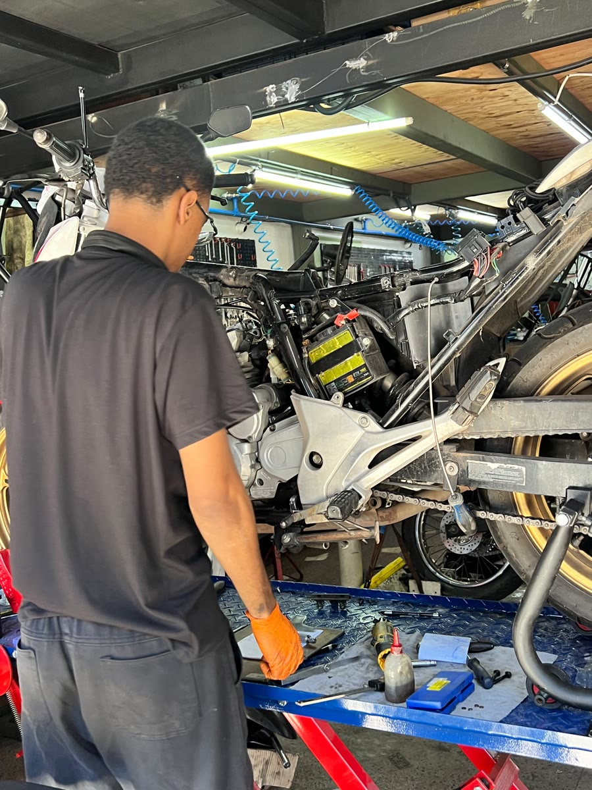
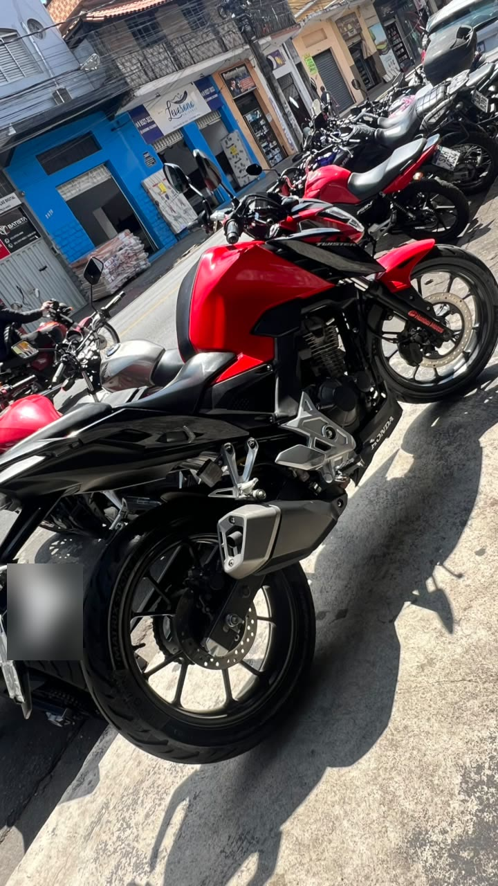
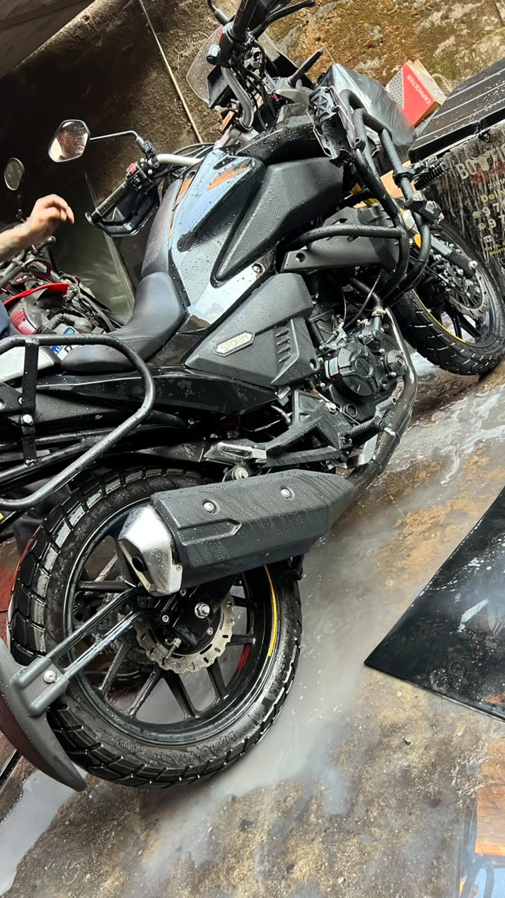
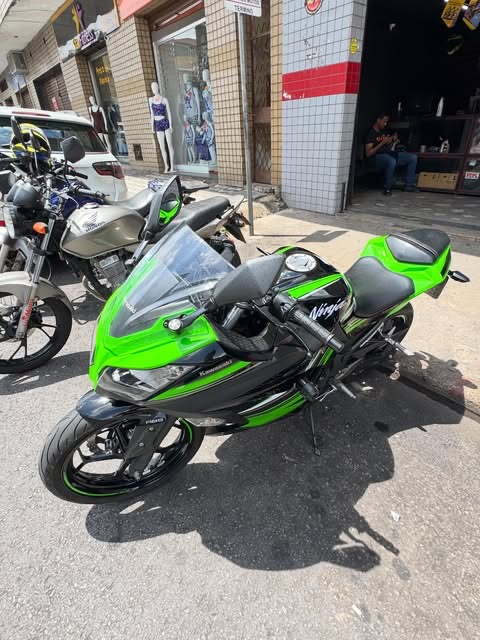
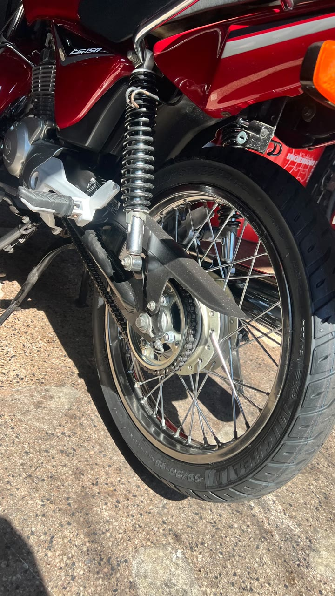
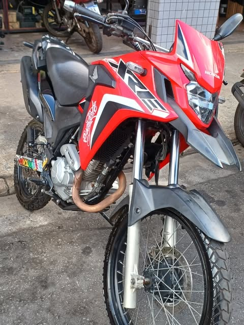
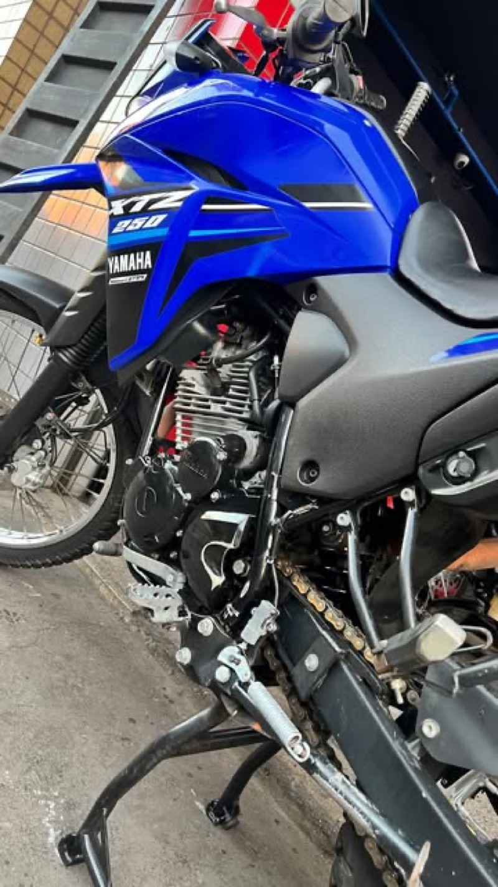

A oficina
Como a gente trabalha, e o serviço que sai daqui todo dia.

Feita para quem depende da moto
No Bairro Industrial, boa parte de quem entra aqui trabalha em cima da moto — entregador, motoboy, quem usa para ir e voltar do serviço. Moto parada é dia sem ganhar — e é por isso que a gente fala prazo na entrada e cumpre o que falou.
01
Chega ou chama no WhatsAppDiz o modelo e o que está acontecendo. Se já sabe o serviço, a resposta é direta: preço e prazo.
02
Avaliação e orçamentoSe for sintoma e não pedido, a moto entra para avaliação. Você recebe o orçamento antes de qualquer coisa ser feita.
03
Serviço feito, moto na ruaAprovou, a gente executa e avisa. O prazo combinado na entrada é o que vale.
O que a gente pergunta quando você chega
Não é burocracia. Cada pergunta abaixo encurta o diagnóstico — e diagnóstico curto é orçamento mais barato.
01
Modelo, ano e quilometragem
Define o intervalo de manutenção da sua moto e a
peça que serve nela.
02
Quanto você roda por dia
Moto de entrega e moto de fim de semana não pedem
a mesma coisa na mesma quilometragem.
03
Quando começou e em que situação
Só na subida? Só com o motor frio? Depois da
chuva? Isso muda a lista de suspeitos.
04
O que já foi mexido
Serviço recente em outro lugar, peça trocada,
acessório instalado. Evita procurar no lugar errado.
05
Qual foi a última troca de óleo
Se você não lembra, já é uma resposta — e
provavelmente o primeiro item da lista.
06
Você precisa da moto quando
É isso que define o prazo que a gente combina
na entrada.







Sua moto está parada agora?
Manda o modelo e o que está acontecendo. A gente responde com preço e prazo.
Falar no WhatsApp